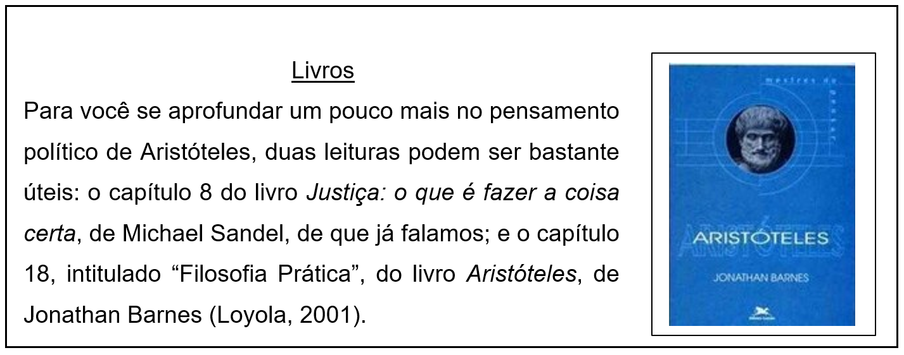

CAPÍTULO 5: JUSTIÇA E VIRTUDE NA INDÚSTRIA ALIMENTÍCIA, PETROLÍFERA E QUÍMICA
As leis devem existir para tornar as pessoas melhores? Ou elas devem ser neutras em relação a temas como honra e virtude, deixando que os indivíduos definam por si mesmos o que eles consideram honroso e que tipo de vida eles querem levar?
Questionando a neutralidade
Em geral, a filosofia política moderna se caracteriza por uma defesa de que a política deve se manter neutra em relação a questões sobre honra e virtude, e em relação ao que se concebe como uma vida boa. Introduzir esses temas na política seria perigoso porque as pessoas, e diferentes grupos sociais, divergem em relação ao que é honroso e virtuoso, bem como em relação ao que concebem como uma vida boa. A política, portanto, deveria ser neutra a fim de garantir um domínio amplo de liberdades individuais: cada um deveria poder viver a vida que considera boa. Entretanto, quando se discute o acesso a diferentes instituições sociais, como as universidades, parece que o debate sobre honra, virtude e mérito se torna inseparável do debate sobre justiça, ou seja, sobre a forma correta de se distribuir aquilo que uma sociedade valoriza. Para bem compreender essa discussão, a obra de um filósofo antigo muito importante, o grego Aristóteles (384 a.C. – 322 a.C.), se mostra particularmente iluminadora.
Aristóteles, a vida boa e o fim da política
Aristóteles, como já vimos no primeiro capítulo, defendia que toda ação humana visa a um fim, e que é porque o agente da ação toma esse fim como algo bom, isto é, como um bem, que ele deseja alcançá-lo. No entanto, em geral, os fins são também meios para atingirmos outros fins: se você sai de casa com a finalidade (com o fim) de pegar um ônibus, pegar o ônibus não é o seu fim último, que explica por que você saiu de casa; pegar um ônibus é, para você, um meio para você atingir um outro fim que você concebe, que é, por exemplo, chegar ao trabalho. E chegar ao trabalho não é um fim último, é também um meio para você ganhar um salário, e ganhar um salário é um meio para você pagar suas contas, etc. Com base nesse raciocínio, Aristóteles percebeu o seguinte: tem de haver um fim último que explique toda essa cadeia de fins e que não possa nunca ser um meio para o alcance de algum outro fim, e se há esse fim último, esse fim deve ser visto como o bem último para todo ser humano. Esse bem último seria o que Aristóteles chamou de eudaimonia, que comumente se traduz por felicidade. Mas, embora venhamos a usar essa tradução, é importante saber que a noção grega de eudaimonia se referia sempre a algo mais do que aquilo a que normalmente fazemos referência por meio da palavra ‘felicidade’: a eudaimonia era vista como a plena realização da vida humana, como uma vida plena, e não como um estado de espírito passageiro. Verbalmente, diz Aristóteles, todos estão de acordo ao dizer que a felicidade é o maior dos bens que se pode alcançar pela ação:
"pois tanto os homens comuns quanto os homens de cultura superior dizem que é a felicidade, e identificam o viver bem e o agir bem com o ser feliz; mas no que diz respeito ao que é a felicidade eles discordam, e os homens comuns não a concebem do mesmo modo que os sábios. (Ética a Nicômaco, Livro I, cap. 4)"
O fim último das ações humanas seria, portanto, para Aristóteles, a felicidade. Mas em que consistiria a felicidade para Aristóteles? Após descartar alguns candidatos, o filósofo grego lança mão do que ficou conhecido como argumento da função própria. Esse argumento consiste, basicamente, no seguinte. Qual é a função própria de uma faca? É cortar. Uma boa faca é, portanto, aquela que corta bem. O bem, para uma faca, é, portanto o cortar bem. Uma faca que corta bem é uma faca que realiza plenamente sua natureza. Seguindo esse raciocínio, Aristóteles pergunta: qual é a função própria, ou a característica própria, de um ser humano? O que distingue o ser humano de todos os outros seres? Ora, ele é um ser racional. Um ser humano que realiza plenamente sua natureza é, portanto, um ser humano que realiza plenamente sua racionalidade. Um ser humano só pode ser um ser pleno, feliz, no sentido de Aristóteles, se ele dedicar sua vida ao exercício daquilo que lhe é próprio, sua razão.
No entanto, Aristóteles também observou que o ser humano exerce sua racionalidade em dois domínios bastante diferentes: o domínio teórico e o domínio prático. O domínio teórico é o domínio do pensamento, da reflexão. O domínio prático é o domínio das ações que realizamos no mundo e que alteram o mundo – por mais que seja uma mudança pequena, um mundo em que você sai de casa para ir ao trabalho é diferente de um mundo em que você não sai de casa para ir ao trabalho; as ações, portanto, modificam o mundo; a mera reflexão, não. A realização plena de uma vida humana consiste, portanto, na plena realização da racionalidade humana nesses dois domínios.
Ora, agir, para um ser humano, envolve perceber coisas como o bom e o mau, o justo e o injusto. Agir bem ou de forma justa, consiste, portanto, em fazer a coisa certa, no momento certo, em relação à pessoa certa, na medida certa, etc. Como, no entanto, um ser humano se torna bom ou virtuoso? Certamente, não basta ler um manual sobre como agir bem para se tornar um bom agente, assim como não basta ler um bom manual sobre a prática do violão para se tornar um bom violonista. É preciso que se tenha bons modelos a seguir e que se pratique muito. Só se aprende violão tocando violão, e só se aprende a ser um bom agente agindo entre outros seres humanos. Portanto, para que o homem realize plenamente sua racionalidade no domínio prático de sua vida, é preciso que ele viva em sociedade, que ele viva em meio a outros seres humanos, no meio dos quais ele desenvolverá suas capacidades tipicamente humanas de distinguir o bom do mau, o justo do injusto. É por essas razões que Aristóteles afirma que o homem é um animal social e que o Estado existe por natureza: porque é apenas no Estado que o homem pode realizar o seu fim, que é a plena realização de sua natureza. O Estado existe, portanto, por natureza, e o seu fim é promover uma boa vida para seus cidadãos e torna-los cada vez melhores.
Como veremos agora, essas teses de Aristóteles acerca do que é uma vida boa para um ser humano, sobre a função do Estado e sobre o papel da política em nossas vidas, contém uma forte implicação acerca da finalidade das instituições sociais e sobre as virtudes que essas instituições devem premiar, tendo em vista sua finalidade.
Se for aberta uma seleção para compor o naipe, ou conjunto, de violinos da Orquestra Sinfônica de Porto Alegre, uma importante instituição social porto-alegrense, é provável que sejam feitas audições às cegas para que se escolham os melhores músicos apenas pela sua capacidade de tocar violino. Essa é uma prática comum em exames de seleção para orquestras. Por que os selecionadores não se mostram interessados em questões de aparência ou, ainda menos, em contratar maus músicos? Ora, porque concebe-se que a finalidade de uma orquestra é produzir boa música, e, portanto, os que produzirem melhor música serão admitidos. Ou seja, no momento da seleção, a finalidade da instituição é considerada para que se definam as virtudes que serão avaliadas entre os candidatos.
No entanto, quando se trata de discutir os critérios de seleção para as universidades públicas do Brasil e de outros países, um debate interessante se estabelece: as universidades devem avaliar apenas os méritos acadêmicos dos estudantes, o que é feito, via de regra, através de exames de seleção, ou as universidades devem avaliar também critérios como raça e etnia? As instituições sociais, como Aristóteles reconheceu, não possuem uma finalidade estabelecida pela natureza. Elas são instituições criadas por nós, seres humanos, e a sua finalidade pode estar aberta a discussão. Com base em que critério, então, devemos determinar a finalidade de uma instituição social como uma universidade? Com base em que alguém pode dizer que ela existe apenas para produzir conhecimento de excelência e que, portanto, as únicas virtudes que ela deve premiar no momento da seleção de estudantes são as que envolvem a excelência acadêmica? Do mesmo modo, com base em que alguém pode argumentar que as universidades existem para promover o bem comum e que, portanto, elas devem também premiar qualidades como a diversidade cultural e diferentes origens sociais, a fim de garantir que mais pessoas oriundas de minorias sociais possam ocupar posições de destaque na sociedade? Aristóteles, com sua teoria acerca da natureza humana e do objetivo da política, concebida como o meio através do qual o homem realiza a dimensão prática da sua racionalidade, pretendeu ter oferecido um ponto de referência a partir do qual podemos conceber a finalidade das instituições sociais: todas as finalidades devem estar subordinadas ao fim último da política, que é, também, o fim último ações humanas: a vida boa, concebida como uma vida vivida de acordo com aquilo que é próprio ao ser humano, sua razão, buscando a excelência e o cultivo do bom caráter.
No entanto, essa defesa de que a política deve existir para promover a vida boa e cultivar o bom caráter dos cidadãos pode, como já mencionamos, envolver alguns perigos. Se pensarmos no contexto da indústria alimentícia, podemos tomar como exemplo uma decisão da Câmara Municipal de Belo Horizonte, de outubro de 2016, de proibir que restaurantes exibam sachês de sal nas mesas reservadas aos clientes (http://g1.globo.com/minas-gerais/noticia/2016/10/saleiro-esta-proibido-nas-mesas-de-restaurantes-de-bh-diz-prefeitura.html) Essa decisão foi tomada com base no argumento de que os cidadãos de Belo Horizonte estavam consumindo muito sal e que isso representava sérios riscos à sua saúde. Tendo isso em vista, você concorda com a decisão da Câmara Municipal de Belo Horizonte de dificultar o acesso dos clientes ao sal? Ou você pensa que o Estado deveria se limitar a apenas informar os cidadãos acerca dos riscos do sal? A Câmara poderia argumentar, com base no pensamento de Aristóteles, que as leis cumprem um papel importante no sentido de incutir bons hábitos nos cidadãos. No entanto, alguém que também poderia se opor à decisão da Câmara de Belo Horizonte argumentando que não deveria caber ao Estado definir o que é bom para os cidadãos em questões como a do consumo de sal, limitando-se apenas a informar os cidadãos sobre os seus riscos. Como você se posiciona nesse debate?

Ação e reflexão
1) Você acha que a política deveria ser neutra em relação a valores?
2) Explique a tese de Aristóteles de que toda ação visa a um bem.
3) Explique o argumento de Aristóteles para a tese de que existe um fim último para as ações humanas.
4) Em que consiste a felicidade para Aristóteles?
5) Explique o argumento da função própria.
6) Como Aristóteles justifica sua tese de que o Estado existe por natureza?
7) Por que a tese de que a instituições sociais possuem uma finalidade leva à tese de que essas instituições precisam promover e premiar certas virtudes?
8) Como você se posiciona em relação ao debate sobre cotas raciais e étnicas para o ingresso em universidades? Que argumentos você poderia lançar a favor do seu ponto de vista? Que argumentos você poderia lançar a favor do ponto de vista que você não defende?
9) Você concorda com a decisão da Câmara Municipal de Belo Horizonte? Por quê?
O que aprendi
Neste capítulo, você aprendeu que:
1) A Filosofia Política moderna, em geral, considera que a política deve se manter neutra em relação a valores e a diferentes concepções do que é uma boa vida, garantindo apenas o maior domínio possível de liberdade para escolhas individuais;
2) Aristóteles defendeu que o papel da política é promover uma boa vida para os cidadãos na medida em que a boa vida seria o fim natural de todos eles;
3) O debate sobre a justiça na definição dos critérios de acesso às instituições sociais leva ao debate sobre a finalidade dessas instituições, e, nesse debate, o pensamento político de Aristóteles pode ser um bom guia;
4) Diversas decisões políticas tomadas ainda hoje parecem assumir a perspectiva aristotélica sobre a função da política.